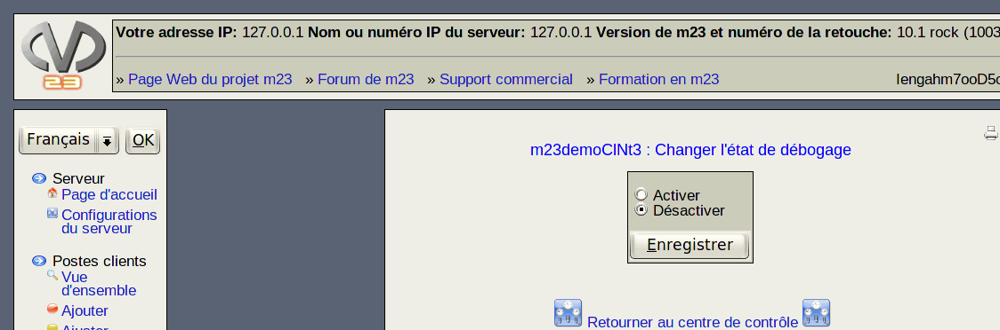

Les postes client dont le mode de débogage est activé ne visualisent pas les informations d'état de l'utilisateur, par contre seront affichés la sortie des scripts et des outils exécutés.

De cette manière, vous pouvez mieux voir si erreurs se produisent lors de l'execution du script.
root
2015-04-30